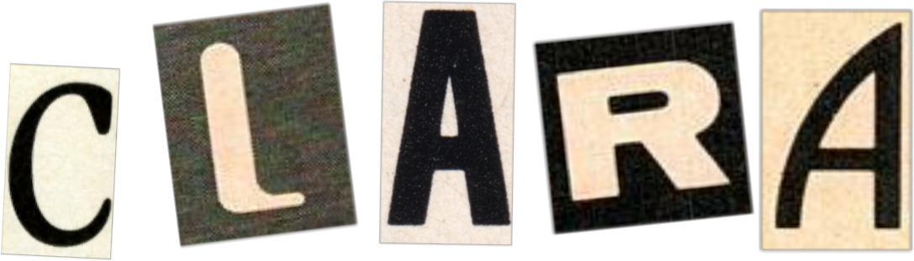

Edição especialNº 01Design · Tecnologia · Comunicação
Extra! Clara de Mello
apresenta
o seu
portifólio!
Design, tecnologia, comunicação e um tanto de curiosidade: conheça a pessoa por trás das páginas a seguir.
QUEM É A

?Nessa Edição você vai conhecer uma garota curiosa que gosta de transformar ideias em coisas que podem ser vistas, lidas e experimentadas. Clara gosta de colocar ideias em movimento, experimentar possibilidades e descobrir até onde uma boa ideia pode chegar.
E essa edição está apenas começando, tem muito mais esperando por você...
O que ela sabe fazer?
- Figma
- Canva
- HTML
- CSS
- Photoshop
- Illustrator
- InDesign
O que essa garota já fez?
WebSite
Design Gráfico
Entre em contato:
Fale com aRedação!
Tem um projeto em mente?
Me conta!
Onde me achar: